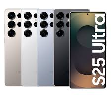

CARACTERISTICAS
El Samsung Galaxy S25 Ultra es el modelo insignia de la serie Galaxy S25, ofreciendo características de vanguardia para satisfacer las necesidades de los usuarios más exigentes. A continuación, se destacan sus principales especificaciones:
Diseño y Pantalla:
Dimensiones: 162,8 x 77,6 x 8,2 mm con un peso de 218 gramos.
Pantalla: Dynamic AMOLED 2X de 6,9 pulgadas con resolución QHD+ (3200 x 1440 píxeles), tasa de refresco adaptativa de 1Hz a 120Hz y protección Corning Gorilla Glass Armor 2.
XATAKAMOVIL.COM
Rendimiento:
Procesador: Qualcomm Snapdragon 8 Elite for Galaxy, mejorado en un 40% en tareas de IA y un 30% en gráficos.
HUFFINGTONPOST.ES
RAM: 12 GB.
Almacenamiento: Opciones de 256 GB, 512 GB o 1 TB.
XATAKA
Cámara:
Trasera: Cuádruple configuración:
Sensor principal de 200 MP con apertura f/1.7 y estabilización óptica (OIS).
Ultra gran angular de 50 MP con apertura f/1.9.
Teleobjetivo de 50 MP con zoom óptico 5x y apertura f/3.4.
Teleobjetivo de 10 MP con zoom óptico 3x y apertura f/2.4.
Frontal: Cámara selfie de 12 MP con apertura f/2.2.
Batería:
Capacidad: 5,000 mAh.
Carga Rápida: 45W.
Carga Inalámbrica: 15W.
XATAKAMOVIL.COM
Sistema Operativo:
SO: Android 15 con la capa de personalización One UI 7.
Actualizaciones: Promesa de siete años de actualizaciones de software y seguridad.
HUFFINGTONPOST.ES
Conectividad y Otros:
Redes: 5G.
Wi-Fi: Wi-Fi 7.
Bluetooth: 5.4.
NFC y UWB: Disponibles.
Resistencia: Certificación IP68 (resistente al agua y polvo).
S Pen: Integrado, ofreciendo funcionalidades avanzadas como escritura a mano alzada y control remoto.
|
 |